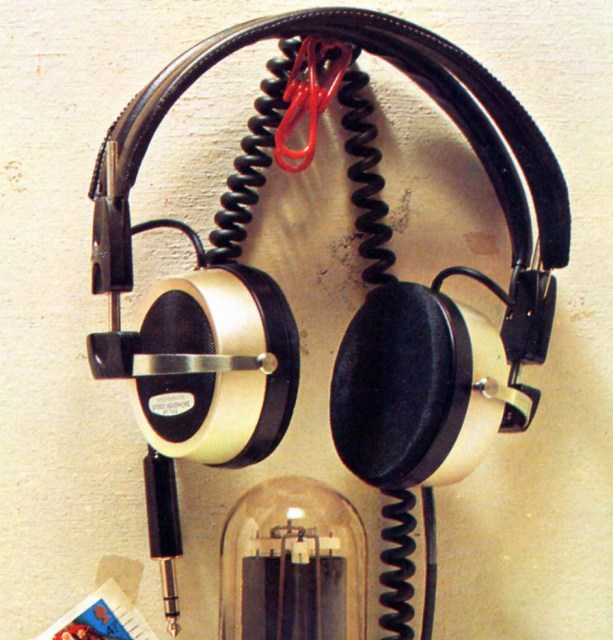
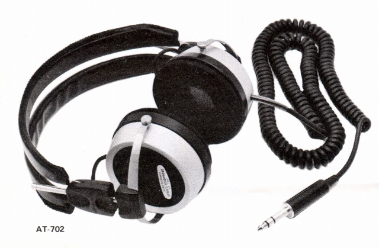

AT-702


■価格 9,000円■型式 オ-プンバック・ダイナミック型■振動板 47�o■インピーダンス ■再生周波数帯域 20-20,000Hz■許容入力 200mW■感度 97dB±2dB/mW at1kHz■コード 5ｍカール■重量 250g（コード含まず）■発売 1974年■販売終了 1977年頃■備考 基本構造はAT-701と同一で、低域特性などを向上させた上級機。
テクニカのインデックスへ